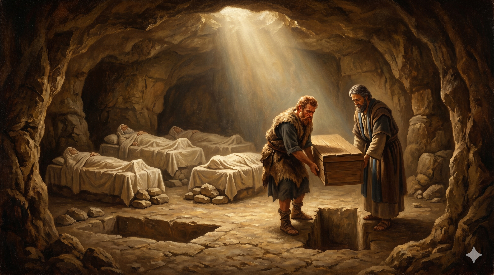

헤브론의 어두운 천막 안, 백팔십 세 이삭이 양가죽 침상 위에 평온히 누워 있다. 그의 한 손은 우락부락한 에서의 거친 손등 위에, 다른 한 손은 부드러운 야곱의 떨리는 손가락 위에 얹혀 있다. 한때 갈라졌던 두 형제가 침묵 속에 서로의 어깨를 맞대고 늙은 아버지의 마지막 숨을 함께 듣는다. 천막 밖으로는 막벨라의 동굴 입구가 황혼에 물들어 가고, 그 위로 별 하나가 천천히 켜진다.
야곱이 기럇아르바의 마므레로 가서 그의 아버지 이삭에게 이르렀으니 기럇아르바는 곧 아브라함과 이삭이 거류하던 헤브론이더라 이삭의 나이가 백팔십 세라 이삭이 나이가 많고 늙어 기운이 다하매 죽어 자기 열조에게로 돌아가니 그의 아들 에서와 야곱이 그를 장사하였더라 — 창세기 35:27–29
이삭의 마지막 장면은 의외로 짧습니다. 단 세 절 — 그것이 한 사람의 백팔십 년을 닫는 성경의 분량입니다. 그러나 이 짧은 세 절 안에는 몇 줄의 문장으로 압축된 거대한 구원사가 흐르고 있습니다. 첫째, 그는 헤브론으로 돌아왔습니다. 헤브론은 그의 아버지 아브라함이 처음으로 막벨라의 동굴을 산 곳, 어머니 사라가 묻힌 곳, 그리고 자신이 어린 시절을 보낸 곳입니다. 평생을 그랄과 브엘세바와 브엘라해로이를 오가던 한 사람이, 마지막에 자기 인생의 출발점으로 돌아와 숨을 내려놓습니다. 이것은 단순한 귀향이 아닙니다 — 한 사람의 인생이 마침내 "처음 받은 약속의 자리로" 다시 정렬되는 거룩한 마침표입니다. 우리도 마지막 자리에서는 결국 자기 신앙의 첫 자리로 돌아가게 되어 있습니다.
둘째, 그리고 더 가슴 뜨거운 사실 — 그의 아들 에서와 야곱이 함께 그를 장사했습니다. 한때 축복을 두고 갈라졌던 두 형제(창 27장), 한 사람은 살의를 품고 다른 사람은 도망쳐야 했던 그 두 형제가, 이제 한 천막 안에서 한 아버지의 시신을 함께 들어 막벨라의 동굴로 옮깁니다. 야곱은 이미 얍복강에서 자기 환도뼈가 부러지는 씨름을 거쳤고(창 32장), 에서는 사백 명을 거느리고 달려와 동생을 끌어안고 운 사람입니다(창 33장). 이 두 형제가 함께 아버지를 장사한다는 한 줄은, 한 가정이 사십 년을 지나며 마침내 회복되었다는 것을 보여 주는 가장 조용한 증거입니다. 이삭은 자기 침상 곁에 둘이 함께 서 있는 그 한 장면을 보고서야, 비로소 평안히 눈을 감을 수 있었습니다. 한 아버지의 마지막 소원이 마침내 이루어진 침묵의 한순간입니다.

막벨라의 동굴 입구, 두 형제가 아버지의 관을 함께 들어 동굴 안으로 옮긴다. 에서는 앞쪽에서, 야곱은 뒤쪽에서 — 두 사람의 발걸음이 처음으로 같은 박자로 움직인다. 동굴 안에는 이미 아브라함과 사라와 리브가의 자리가 나란히 놓여 있고, 그 옆 빈자리에 부드러운 빛이 내려 앉는다.
이삭의 일생은 화려하지 않았습니다. 그는 우물을 다시 판 사람, 양보한 사람, 부르심 앞에 조용히 머문 사람이었습니다. 그리고 마지막에 그는 자기 출발점으로 돌아와, 두 아들의 손에 안겨 평안히 숨을 내려놓았습니다. 우리는 화려한 끝을 동경하지만, 성경이 우리에게 보여 주는 가장 복된 마지막은 "기운이 다하매 자기 열조에게로 돌아가는" 한 줄 — 곧 자기 인생의 처음과 끝이 한 약속 안에 봉인되는 마침표입니다. 오늘 당신의 하루가 평범해 보여도 괜찮습니다. 매일의 작은 우물 하나를 다시 파는 일, 양보하는 일, 침묵하며 머무는 일이 한 사람의 백팔십 년을 만듭니다. 우리의 마지막 자리는 우리가 매일 쌓아 온 그 평범한 자리들의 합입니다.
또 하나 — 두 아들이 함께 아버지를 장사하기까지, 한 가정 안에서 사십 년이 흘렀습니다. 깨어진 관계가 회복되는 데에는 우리가 생각하는 것보다 오래 걸립니다. 그러나 결국 회복은 옵니다. 야곱이 얍복을 건너야 했고, 에서가 사백 명을 두고 동생을 끌어안아야 했고, 두 사람 모두 각자의 광야와 각자의 씨름과 각자의 눈물을 거쳐야 했습니다. 오늘 당신과 어떤 사람 사이에 갈라진 자리가 있다면, 그 자리가 영영 갈라진 채 끝나지 않을 것을 믿으십시오. 한 아버지의 마지막 침상이, 두 아들이 한 손씩을 얹는 화해의 자리가 될 수 있습니다. 회복은 늘 우리가 기다리는 것보다 늦게 오지만, 한 번도 약속의 시간보다 늦게 오지 않습니다.
화려한 끝이 아니라, 자기 출발점으로 돌아온 끝이 가장 복된 마침표입니다.
오늘 당신이 다시 파는 한 우물, 한 번의 양보, 한 번의 침묵이 — 백팔십 년을 닫는 평안의 한 줄을 만듭니다.
갈라진 한 자리가 있다면, 회복은 반드시 옵니다. 약속의 시간보다 늦게 오지 않습니다.